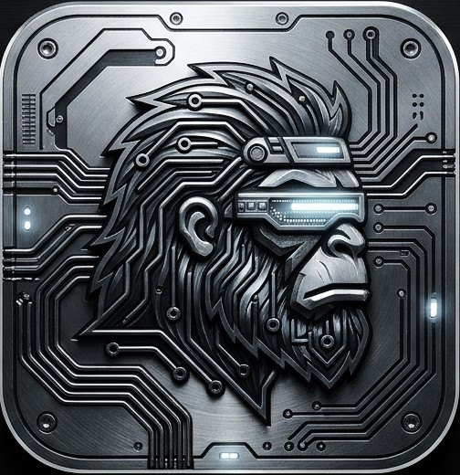
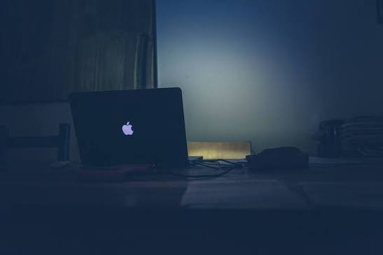

Kevin Durand
Cyber Defense Operator
Welcome to my cybersecurity portfolio and lab repository. Browse the four directories below to access Hack The Box walkthroughs, LetsDefend incident response investigations, security research notes, and archived documentation—complete with step-by-step screenshots, PDFs, and plain-text reports.
Penetration Testing
Hack The Box machine walkthroughs documenting white hat hacking techniques

SOC Investigations
SIEM, EDR, and Log Analysis based on security incidents
Cyber Forensics
Forensic investigation use living off the land and SIEM tools to determine how an attack took place
Incident Response
Response efforts against generated cyber attacks